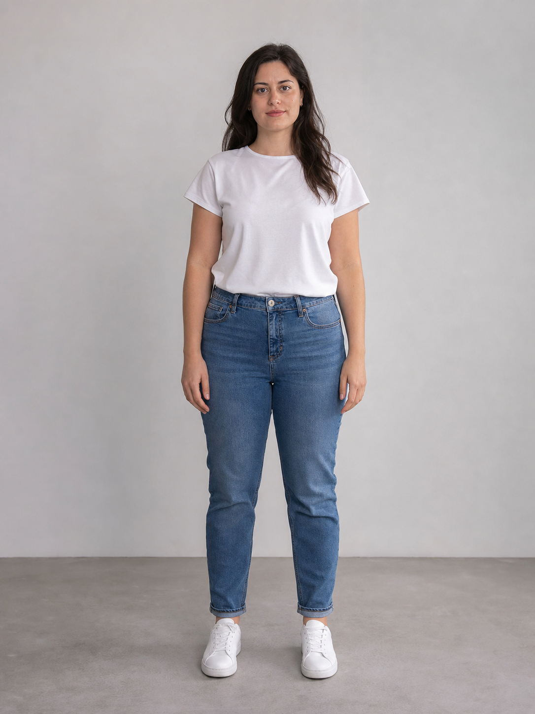
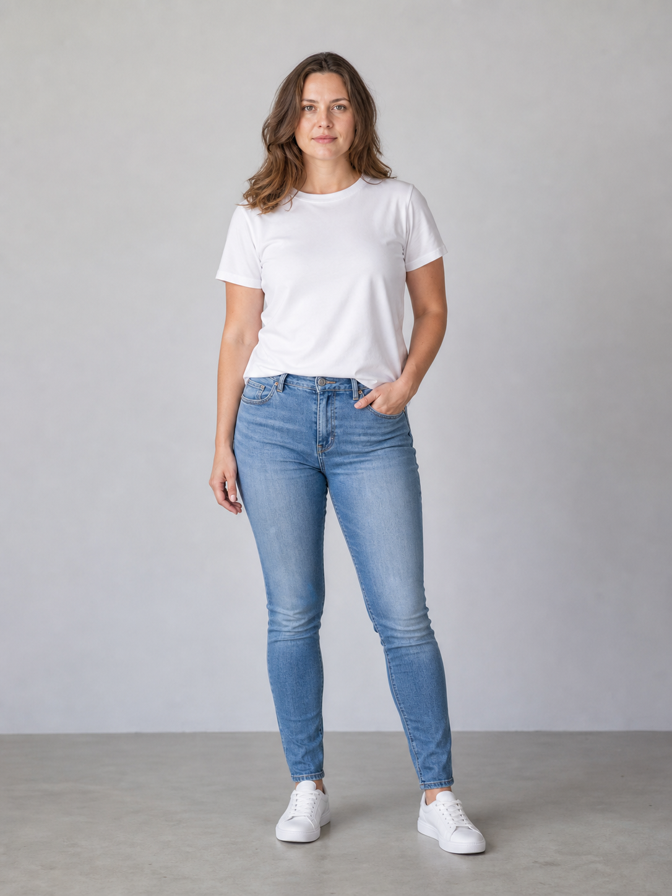

Промтзилла
Как похудеть на фото
с помощью ИИ
Загрузи портрет в полный рост — GPT Image 2 или Nano Banana PRO мягко поправит позу, посадку одежды и силуэт, чтобы фото выглядело естественно и аккуратно.
Пошаговая инструкция
- 1Выбери фото в полный рост или по пояс: лицо, руки и контуры одежды должны быть хорошо видны.
- 2Открой GPT Image 2 или Nano Banana PRO и загрузи исходный снимок.
- 3Скопируй промт ниже и вставь его в поле ввода вместе с фото.
- 4Попроси сделать именно лёгкую естественную коррекцию, а не менять человека до неузнаваемости.
- 5Если фон или лицо исказились, добавь: «сохрани фон, лицо и анатомию без изменений».
- 6Сравни результат с оригиналом и выбери самый естественный вариант.
Пример результата

ДоИсходное фото

ПослеВизуально более стройный силуэт
Промт
RU
Загружаю фото человека. Сделай аккуратную фоторетушь, чтобы человек визуально выглядел немного стройнее на этом снимке. Требования: — Сохрани личность, черты лица, выражение, возраст и общий стиль человека — Сделай лёгкую естественную коррекцию силуэта: чуть выпрями позу, аккуратно подтяни линию талии и посадку одежды — Не делай экстремальное похудение, не меняй телосложение радикально — Сохрани анатомию реалистичной: руки, ноги, плечи, шея и пропорции должны выглядеть естественно — Не искажай фон, пол, стены, мебель и линии вокруг человека — Сохрани одежду узнаваемой, без странных складок, разрывов и артефактов — Результат должен выглядеть как обычная качественная ретушь фото, а не как фильтр или пластика — Без текста, подписей, водяных знаков и рамок
EN
I'm uploading a photo of a person. Edit it carefully so the person looks slightly slimmer in this image while keeping the result natural. Requirements: — Preserve the person's identity, facial features, expression, age and overall style — Apply subtle realistic silhouette correction: improve posture slightly, refine the waistline and clothing fit gently — Do not create extreme weight loss and do not radically change the body type — Keep anatomy realistic: arms, legs, shoulders, neck and proportions must look natural — Do not warp the background, floor, walls, furniture or straight lines around the person — Keep the clothing recognizable, without strange folds, tears or artifacts — The result should look like clean professional photo retouching, not a filter or plastic surgery effect — No text, captions, watermarks or frames
Теги